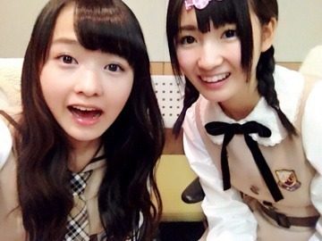

| 2013/11 23 Sat | 逆転する。519回目 |
朝更新ー
最近先生が
授業日数のカウントダウンを
するようになって少し寂しい。
昨日は学校の行事で
ダンスの発表会がありました！
高校3年最後のイベント。

遅めのハロウィンみたいなメイク。
クラスメイトで集まって
朝練したり放課後練習したり...
こういうのって卒業したら
もうできないんだよね。
最優秀賞もらった！
本当に良い思い出...！
今のうちにJKいっぱい楽しまなきゃ。
そんなバカな・・・MV公開！
乃木坂ならぬ乃奇坂女子学院。
の、アイドル部員役です。

自慢のハーフツインくるくる////
こんな珍しい私を見れるのは
そんなバカな・・・MVだけ

ということで、
7thシングルのMVが
全部公開となりました！
ブログのタイトルがヒントでした。
髪にとめた。→バレッタ
自称手裏剣のプロ。→月の大きさ
心臓みたいな果実。→初恋の人を今でも
全力ウインク。
伝説の幽霊部員。→そんなバカな・・・
みんなわかったかなー
そんなバカな・・・でところどころ
まりっかが見当たらないだと？！
そんなバカな！！！！！！！(全力)
学業の為途中参加でした。
あー参加したかったなー
握手マシーントレーニングのシーンも
レスリングでダンスのシーンも
どんなに探してもいない。
悪しからず。
真面目な幽霊部員ということで。
撮影が異常に楽しかったです。
ジャージ姿で
歓迎するシーンはどれだけ
ウザくダサくキモく見せるか...
どんなにやっても生駒には負ける。

バーカな♪
７thシングル
『バレッタ』の着うた（Ｒ）配信！
レコチョクで特典プレゼント。
26日までです！
よろしくお願いします♪
それではお仕事がんばってきます！
まりか
コメント(319)
2013/11/23 12:12